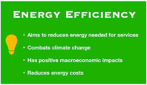
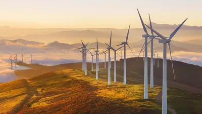
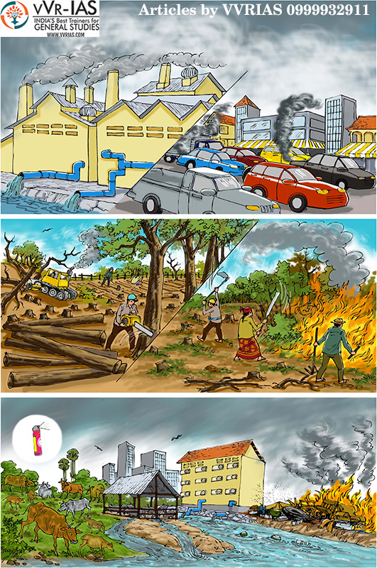
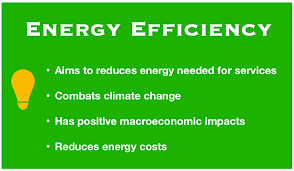
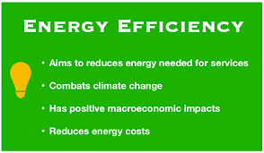
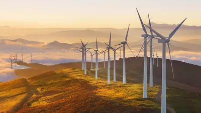
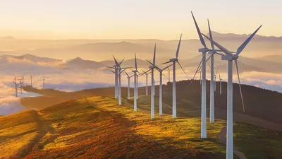

Addressing climate change requires a multifaceted approach that combines mitigation strategies to reduce greenhouse gas emissions and adaptation strategies to deal with the changes that are already occurring or are inevitable. Here are some key solutions to combat climate change:
Transition to Renewable Energy: Shift from fossil fuels (coal, oil, natural gas) to renewable energy sources like solar, wind, and hydropower. This reduces emissions from electricity generation and transportation.
Efficiency: Improve energy efficiency in buildings, transportation, and industrial processes to reduce energy consumption and associated emissions.

Transportation: Promote electric vehicles and public transportation to reduce emissions from the transportation sector.

Reforestation and Afforestation: Plant trees and restore forests to absorb carbon dioxide from the atmosphere.
Agriculture: Implement sustainable farming practices to reduce emissions from agriculture and enhance soil carbon sequestration.

Capture and Storage (CCS): Develop and deploy technologies to capture and store carbon emissions from power plants and industrial facilities.
Responsibility: Encourage businesses to adopt sustainable practices, reduce emissions, and invest in renewable energy sources.
Solving the climate change challenge requires a concerted effort from governments, businesses, communities, and individuals. There is no single solution, but rather a combination of efforts on multiple fronts to mitigate the impact of climate change and adapt to the changes already underway.
.jpg) 
.jpg) 
.jpg)
.jpg)
.jpg)
.jpg)
.jpg)
.png)
.jpg)